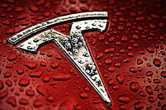

Tesla's Case
By: Echo

Recently, a photo aroused my attention. On April 19, on the first day of the Shanghai Auto Show, a woman wearing a T-shirt printed with the words "Tesla Brake Failure" climbed onto the roof of the vehicle displayed on the Tesla booth, and then she was rushed out of the show by violence. The photo was sent to social media in China. Various news media rushed to follow up the report, and the matter continued to expand on social media, attracting the attention of the people across the country. In this incident, Tesla not only provided us with a failed crisis communication case, but also made me think about the problems in Tesla's previous brand strategy.
It is necessary to protect the brand as a major organizational asset for some companies with strong brands (Verhoef et al. 2013). Tesla is a very famous American electric vehicle company and sells electric cars all over the world. In Tesla's brand strategy, Autopilot has always been a bright spot in its promotion and sales process. More and more cases show that Tesla vehicles will fail to brake during driving, and fires will occur after a collision. On the second day after the Shanghai Auto Show, a Tesla vehicle accident occurred in Guangzhou and caused a fire. The driver died on the spot, and on April 17, a Tesla car in Texas, USA suddenly hitting a big tree on the side of the road caused a deflagration, and two people in the car died on the spot. The police believed that the vehicle was in an autonomous state at the time of the accident (Reuters 2021). In the results of previous car accident investigations, Tesla will use driver errors or network problems as an excuse. But the numerous cases should give Tesla a warning that these cases could affect Tesla's brand reputation. One purpose of strategic communication is to achieve sustained success (Zerfass et al. 2018). Rather than advocating the advantages of Autopilot as before, Tesla should take a long-term view to do strategic communication plans in marketing. Tesla should provide training to all users who purchase Tesla vehicles, because Tesla's driving is different from other vehicles. Only when the user learns the correct way to drive, can the accidents caused by driving errors be reduced. At the same time, Tesla is responsible for informing customers of possible dangerous situations during driving (such as possible due to network problems) before selling.
In addition, Tesla's crisis management performance in this incident should be criticized. Tesla didn't make enough preparations for what might happen. When unpredictable events occur, Tesla chooses to use violence to treat customers. This will make others feel that Tesla is disrespectful to customers. On the same day, Tesla posted twice on Weibo (a social media in China), with strong words and the content expressing himself without the slightest error. Then, in an interview with Grace Tao, Tesla's vice president for external relations, she said “We have no means to compromise, it's just a process in the development of a new product”. This arrogant and impolite response has aroused strong protests. So far, Tesla has lost the most critical 24 hours in dealing with the crisis. Tesla should be prepared to deal with the crisis. When a crisis occurs and the truth is unclear, instead of using violent and strong words to make the public feel uncomfortable, Tesla should actively coordinate with customers and express its responsibility to products, customers, and society through the media.